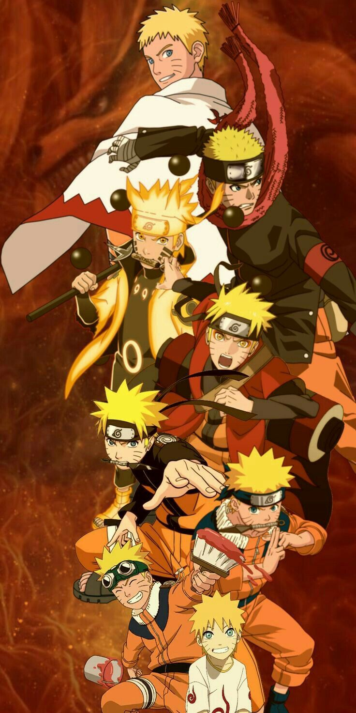
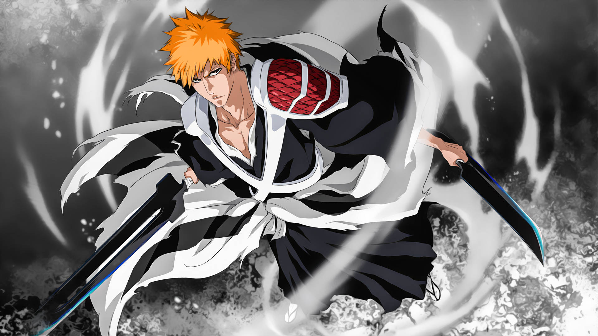

Discover The Most Famous Anime
The “Big 3” anime refers to the trio of massively popular shonen series—Naruto, Bleach, and One Piece—that dominated the anime landscape during the early 2000s. Each show garnered huge fan followings worldwide and helped define mainstream anime culture through epic storytelling, memorable characters, and long-running arcs.


